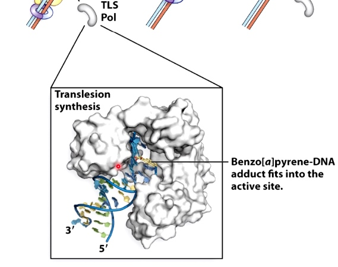

DNA Damage Tolerance
Cells tolerate DNA damage if they do not have tiem to repair it.
Replication + DNA lesions can cause problems
How do cells deal with DNA lesions during DNA replication?
- Direct reversal
- Excise and resynthesize
- Keep replicating and deal with the damage later
The first two methods need time to repair, it is not good if it is still repairing when the DNA polymerase try to pass.
So the third method is the best.
1. Translesion Synthesis
Another DNA polymerase will be able to accommodate collision within its active site. And it will be able to continue replicating past the lesion without removing it from DNA.
Cellular procrastination with TLS polymerases
Replicative polymerases are switched for translesion synthesis(TLS) polymerases that can replicate past the DNA lesion.
When DNA Pol III encounter the thymine dimer, DNA Pol III dissociate from the DNA and replcaced by one of the translesion synthesis DNA polymerases. Pol IV or Pol V. After pass through the problematic region, the TLS polymerase dissociate from DNA and replaced by replicative polymerase.
Sometimes, bypass by TLS polymerases results in mutations.
Example: TLS pols can synthesis past benzo[a]pyrene

TLS polymerases have a less constrained active site geometry.
2. Fork Stalls -- replication fork regression
Sometimes translesion synthesis is not possible. Maybe there is no DNA polymerase can accommodate a particular lesion.
Using fork regression to restart stalled replication forks
There are several proteins can use ATP hydrolysis to reverse the fork and pair the newly-synthesized strands.
This replication fork regression can do one of two things.
- Returen the lesion to dsDNA allows it to be recognized and repaired
- It can return the region to the double strand DNA, which would give us time to recognize and repair or remove the lesion.
- After repairing the lesion, use nuclease to digest ends of new DNA and basically restore the replication fork.
- Alternatively, the mascent leading strand can use th enascent lagging strand as a template.
- We have been able to copy past the side of this lesion on the leading tsrand template. We did it by using a complientary sequence on the newly synthesized lagging strand.
What happens if the cell starts repair but don't finish it before the fork arrives?
Explore the content in ths final video.
Put it all together
1. Translesion Synthesis
2. Fork Stalls
3. Repair Initiated
Homologous Recombination
The exchange of similar DNA sequences between different DNA molecules.
Cells use homologous recombination to introduce genetic variation as well as to repair damaged DNA.
The mechamism in e.coli is called the RecBCD pathway
This mechanism closely follows the double strand break repair model of homologous recombination.
Therefore the RecBCD pathway serves as a good model for recombination in both bacteria and eukaryote.
In RecBCD pathway, homologous recombination is initiated by double-stranded breaks in a single DNA molecule.
Whereas in holiday model, the recombination gegins with single-stranded nicks at identical positions in each DNA duplex.
The DNA is processed to generate a gap in DNA with a 3' single-stranded overhang or tail.
In E.coli, the ReckBCD enzyme processes blunt breaks and DNA molecules to generate such tails.
RecBCD consist of three product of three genes: RecB, RecC and RecD.
RecBCD binds to the DNA at the site of the double strand break. RecBCD has both helicase and nuclease activities. It tracks along the DNA, unwinding the DNA and frequently cleaving each strand. The cleaved DNA is destroyed.
E.coli DNA contains relatively frequent 8 nucleotide crossover hotspot instigator sequences, commonly refer to as chi sites. When RecBCD encounter a chi site, its nuclease activity is altered. The RecD subunit is lost of its function is disabled.
Beyond chi site, RecBCD no longer cleaves DNA from 3' to 5'. However, the 5' to 3' activity increase. This result in a 3' single strand tail on the DNA terminating in the Chi sequence. RecBCD helps to direct a protein called RecA to the single-strand DNA tail. Then hundreds of RecA subunits will form a protein DNA filament. One RecA for every three nucleotides of DNA.
The filament has two distinct binding sites.
- Primary site with the single stranded DNA molecule.
- Secondary site
The RecA -- single-stranded DNA complex, participates in a search in DNA homology.
The secondary site binds a double stranded DNA molecule. Binding in secoandary site is rapid, transient and independent of DNA sequence. Meaning the filament can quickly bind a double-stranded DNA and scan along the sequence.
Once a region of base-pair complementarity is located, RecA promotes teh formation of a stable complex between the single stranded DNA tail in the primary site and the complementary strand of the double stranded DNA molecule in the secondary site.
As in the holiday model, this step is called strand invasion. However, unlike holiday model, the RecBCD pathway can evolve two holiday junctions.
Once the juncitons are formed, RecA can dissociate from the DNA. The replication machinary then fills in the gaps in the DNA.This synthesis of new DNA is another feature missing in the holiday model.
Next step is branch migration. Except it can involve two holiday junctions.
The branch migration is catalyzed by two proteins. RuvA and RuvB. Which form UuvAB complex at holiday junctions.
RuvA protein is a DNA binding protein that recognizes the gross structure of the holiday junction, regardless of its specific sequence.
RuvA recruits two hexamers of RuvB to each holiday junction to form RuvAB complexes.
RuvB is a ATPase. ATP provides the energy to drive the exchange of base pairs during branch migration.
The final step of RecBCD pathway is holiday junction resolution. which is catalyzed by RuvC nuclease.

In RecBCD model,
If both junctions are cleaved at site 1

If both junctions are cleaved at site 2

If junctions are cleaved at different sites
Genome Editing with CRISPR-Cas9
Changing gene in living cell.
The CRISPR method is based on a naturla system used by bacteria to protect theselves from infection by viruses.
When bacteria detects the presence of virus DNA, it produces two types of short RNA, one of which contains a sequence that matches that of the invading virus. These two RNAs form a complex with a protein called Cas9.
Cas9 is a nuclease, a type of enzyme that can cut DNA. When the matching sequence, known as a guide RNA, finds its target within the viral genome, the Cas9 cuts the target DNA, disabling the virus.
It can cut not just virus DNA but any DNA sequence at a precisely choosen location by changing the guide RNA to match the target.
Once inside the nucleus, the resulting complex will lock onto a short sequence known as the PAM. The Cas9 will unzip the DNA and match it to its target RNA. If the match is complete, the Cas9 will use two tiny molecular scissors to cut the DNA. Once this happens, the cell tries to repair the cut, but the repair process is error prone, leading to mutations that can disable the gene, allowing researches to understand the function.